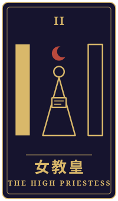
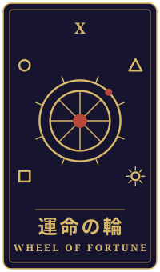
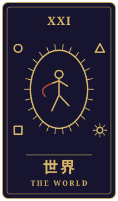

遠いところ
物語の手前に、ひとつの相談がありました。三枚のタロットをめぐるやりとりを、聞こえたままに書き留めています。
持ち込まれた相談
今朝の地震で目が覚めました。震源は母が一人で暮らす海辺の町の沖だったのに、母のところはほとんど揺れず、遠く離れた私の部屋のほうが揺れたそうです。電話をすると母は「こっちは何ともないよ、あんたは大丈夫なの」と笑っていました。母は父が亡くなってから小さな民宿を一人で続けていて、帰ってきて継いでほしいと前から言われています。七年前に喧嘩して家を出て、今の町に移ってからは、ここで必要とされている気がしてやっと息ができるようになりました。でも、母の声が少し細くなった気がします。帰るべきなのか、ここにいていいのか、わからなくなっています。
タロットの読み解き

過去
女教皇・逆位置
過去の位置には女教皇の逆位置が出ています。この向きは、神経質になったり、疑いが強まったり、本当の思いを抑え込んだりする時期を示すといわれます。七年前の喧嘩のあとから、あなたは自分の気持ちに蓋をしてきたのかもしれませんね。
家を出たことも、今の町で息ができるようになったことも、その時間の中で大切な選択だったのでしょう。

現在
運命の輪・逆位置
現在は運命の輪の逆位置です。停滞やずれたタイミング、空回りを表すこの向きは、今の心が「どちらに進んでいいか」を測りかねて、動けずにいる状態を映しているように見えます。
お母さんの声が細くなった気がする、という感覚も、その揺れの一部かもしれません。大切な人を案じる気持ちと、自分が息をできる場所への思いが、同時に心の中で引っ張り合っているのではないでしょうか。

未来
世界・正位置
未来には世界の正位置が出ています。完成、達成、統合を意味するカードで、さまざまな経験や思いが一つにまとまっていく状態を表すといわれます。
ここで大切なのは、「帰るか残るか」という二択の先に、必ずしも勝ちと負けがあるわけではないということです。どちらを選んでも、これまでの歩みと母とのつながりが一つに結ばれていく道もあると、このカードは静かに示しているように思えます。
最後に
今朝の地震で、遠くにあるあなたの部屋が揺れて、お母さんのいる場所は静かだった。その不思議さが、今も心を揺らしているのかもしれません。
このカードの並びは、帰ることを勧めるものでも、残ることを勧めるものでもありません。まずは、お母さんの声が細く感じられた理由を、直接話して確かめてみるのも一つの方法でしょう。民宿のことや暮らしのことは、家族や信頼できる専門の方とも話しながら、焦らずに考えてよいのだと思います。
帰り際の問いここまでで得たものを、次にどう生かすのか。
読み解きは、タロット占い「月夜のアルカナ」が、この相談と引かれた三枚から返したものです。小説は同じ三枚を、別の角度から描いています。相談者は物語のための架空の人物です。相談文・読み解き・短編本文は、いずれも生成AIを使って制作しています。
物語に戻る